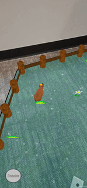

Language/Engine/Platform
Who wouldn't love a little virtual pet that doesn't die or get sick? Adopt a capybara today!Augmented Reality has been around for a long time, but as dedicated hardware like the Apple Vision Pro are launching, I felt like doing a little AR this year. In my team of four, two had Android phones and the other two had iPhones. And one of the iPhone owners also had a Mac, so we decided to develop a project in Unity using the AR Foundation framework for both Android and iOS.

Plane
AR Foundation provides a decent amount of pre-written scripts such as the AR Plane Manager that detects flat surfaces based on image data, gyro sensor input, and even LiDAR for some phones. We allow the user to select the "playground" that their capybara will roam.
Physics
Obviously, the real fun in AR is the ability for the user to feel the physical connection between their phone and the real world. What better way to do that than to throw things that actually land on a surface? A little bit of tweaking with the Physic Material also made the snacks sticky, making things easier for the user.
Image Tracking
Another pre-written script by AR Foundation is AR Tracked Image Manager which allows us to use images as anchors to which virtual objects can be attached. Here we see a bowl spawning on top of the card...
... so that it can catch candies from the cannon!

Velocity Detection
AR Tracked Image Manager can follow moving images as well (given that the hardware is powerful enough to handle image tracking smoothly...) and this allows us to implement yet another feature: Velocity Detection. Shown here is the tree being shaken and dropping fruits as the card moves.
Conclusion
I was new to every aspect of these project: augmented reality, mobile development, Unity (aside from ECS) — hardships were to be expected. Here are just a few I remember looking back at the project.- Features such as Multicast Delegates were working in editor but not on the build.
- The more features we added, the worse the plane detection ability became.
- Rapid prototyping and congregating of the Scenes required tons of refactoring work, especially when combined with how unfamiliar I was with best coding practices in Unity.